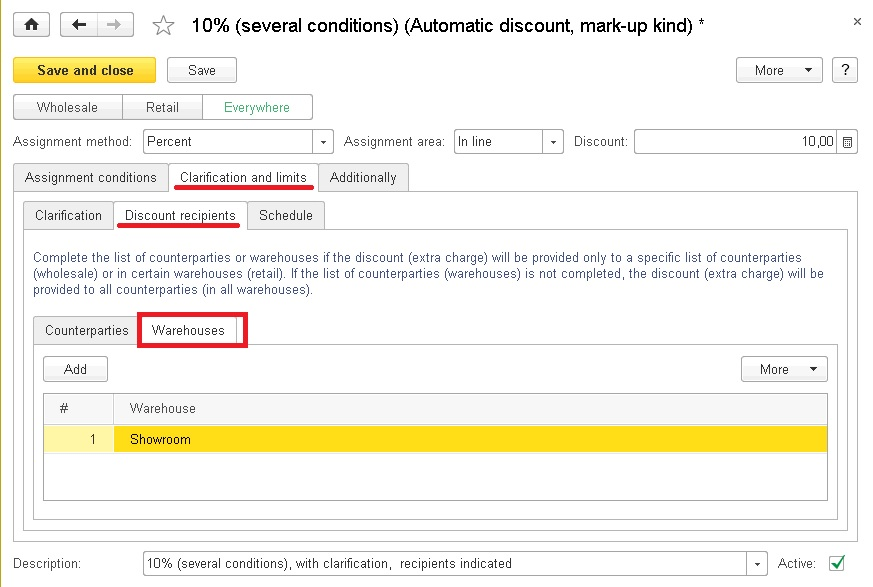

In the application, you can assign automatic discounts for sales to customers.
Automatic discounts can be set in percentage or in absolute values, in the whole document or only in some particular string.
For automatic discounts you can adjust:
· Discount conditions (for one-time sale volumes or for purchase amounts)
· Spheres of discount application: wholesale, retail or any sales
· Exact discount value for a specific products and services item, products and services group, products and services category or a price group
· List of counterparties who receive the discount
· List of retail warehouses where the discount is provided
· Discount application timetable in terms of time and weekdays
The application calculates automatic discounts in the following documents: Acceptance certificate, Invoice for payment, Customer order, Work order, Customer invoice, Processing report, Receipt CR, Receipt CR return.
In the documents you can promptly find information on automatic discounts applicable to a particular string or to the whole document.
To facilitate analysis of applied automatic discounts, the Automatic discounts report is used.
You have to make preliminary adjustment to use automatic discounts in the application.
To make the adjustment, go to the Settings section, click the Sales hyperlink and then select the Use automatic discounts and markups check box.
Other application settings do not influence application of automatic discounts and estra charges in the application.
Thanks to this, it is possible to define discount values and conditions which can not be changed by sales persons and managers who process the documents.
The Automatic discounts and markups kinds catalog is intended for storing and editing kinds of automatic discounts and markups .
You can call the catalog from the Sales section by clicking the Discounts and markups kinds hyperlink.
Upon that the application opens a workspace for editing kinds of discounts and automatic discounts.
Go to the Automatic discounts and markups kinds tab.
If the use of discounts and markups is enabled, then only the list of automatic discounts kinds will be available.
To add a new kind of automatic discounts, click Create.
At that the application displays a workspace for editing new automatic discount kind details.
With the discount assignment option button you can specify documents to which the discount applies.
When the Wholesale option is selected, the discount is applied in the documents as follows: Acceptance certificate, Invoice for payment, Customer order, Work order, Customer invoice and Processing report.
When the Retail option is selected, the discount is applied in the documents Receipt CR and Receipt CR return.
When the Everywhere option is selected, the discount is applied in all the above listed documents.
In the Provision type field, specify how the discount shall be provided - in Percentage or as Amount. If you choose Amount, then the field for selection of currency will be displayed.
In the discount application, specify what is covered by the discount: the whole document or only the string which complies with the discount conditions.
In the Discount field, specify the discount size in percentage or as amount in accordance with the provision type.
If you specify only the above mentioned details, the discount will be always provided in the sale documents without any verifications.
When you need to provide automatic discount upon particular conditions, fill in the list of conditions in the Discount conditions tab.
Discount conditions are stored in a separate catalog.
The procedure of discount conditions adjustment will be described further. Here we provide only general overview of discount conditions.
Discount conditions may take into account the amount and number of sales in a document (in the whole document or in a single string of the document).
Discount conditions may also take into account specific sets of products in the whole document.
For example, thanks to the specified conditions, you can provide discounts in the following cases:
When the discount size is different for different products and services items, open the Refinements and restrictions tab which includes three more tabs. Our concern here is only with the Refinements tab.
On this tab, you can fill in the products and services list and discount sizes for every item.
Instead of a products and services item, you can specify a products and services group. IN such case the specified discount size will be applied to all items in this group (taking into account the hierarchy).
In a similar manner you can set restrictions for products and services items belonging to a particular price group (using the According to products and services price groups option button) or a products and services category (using the According to products and services categories option button).
When for wholesale it is required to provide an automatic discount only to a specific list of counterparties or a group of counterparties, open the Discount recipients tab, and then open the Counterparties tab.
On this tab, you can fill in the list of counterparties to which the automatic discount will apply.
You can choose a catalog item or group. If you select the Counterparties catalog group, the discount will be provided to the counterparties from this group (taking into account the hierarchy).
When for retail trade it is required to provide an automatic discount only in specific warehouses (in specific shops), open the Discount recipients tab, and then open the Warehouses tab.
On this tab, you can fill in the list of warehouses where the automatic discount will apply.

When an automatic discount has to be applied only on specific weekdays or at a given time during the day, fill in the timetable on the same-name tab.
When calculating automatic discounts set with timetables, the document date is analyzed. For a new document the current date is analyzed.
You can disable a discount any time - to do that you only need to clear the Active checkbox.
You can select or clear the Active checkbox simultaneously for several kinds of automatic discounts. To do that, select one or several kinds in the list of automatic discounts (markups ) kinds and on the shortcut menu click Select Active checkbox or Clear Active checkbox.
As you see, the designers tried to implement in the application the most flexible ways of adjusting discounts and markups to be provided to customers at processing sale documents.
If the company applies several kinds of automatic discounts, there should be a rule of shared use of these discounts.
The common rule of automatic discounts shared use is set in the automatic discounts kinds list.
Let us consider an example.
In our company, a customer gets 15% discount for purchasing more than 10 pcs of one product and 10% discount for purchasing products in the amount of more than 10000 rubles.
Thus if a customer buys 10 refrigerators in the amount of 100 thousand rubles, which discount size should the organization provide to this buyer?
You can set in the application one of the following rules of shared use of discounts:
Adding – discounts are summed up. For the above example the discount would be 35%, i.e. 35 thousand rubles.
Maximum – the maximum discount is applied. For the above example the discount would be 15%, i.e. 15 thousand rubles.
Minimum – the minimum discount is applied. For the above example the discount would be 10%, i..e. 10 thousand rubles.
Sequential application – discounts are applied in a successive way specified by the Sequence order attribute. Suppose, for the above example the 15% discount has the 1-st order in the sequence, and the 10% discount - the 2-nd order.
In this case, the application acts as follows: at first, 15% discount is applied to the sum of 100 thousand rubles. The amount of the discount equals to 15 thousand rubles, and the sale sum with this discount equals to 85 thousand rubles. Then the application applies 10% discount to the sum of 85 thousand rubles, and finally the resultant sale amount equals to 85 – 8.5 = 76.5 thousand rubles.
Replacement – the discount with the maximum priority is applied. If the order of discount sequence is the same as in the latter case, then the discount with the first priority is applied. That is, the first discount in the sequence has the highest priority.
You can set the sequence order in the automatic discount (extra charge) kind card.
When for certain kinds of automatic discounts it is required to define a separate rule of shared application, create a shared use group and select the required rule in the group.
You can edit details of shared use groups in the following workspace:
Drag the required discount kinds in the new group.
There may be different levels of automatic discount groups. Number of hierarchy levels is not limited.
Thanks to such structure, you can create flexible discount systems, quickly enable and disable discounts applied in the company and change their priority.
For each kind of automatic discounts you can set individual conditions at which the discount would be provided (refer to clause 3).
The Discount conditions catalog contains the complete list of conditions you can use for setting kinds of automatic discounts (markups ).
To add a new item, click Create.
Complete all required details.
Details scope depends on the selected discount conditions (see the figure above).
You can choose one of the following conditions: for single sale volume or for kit purchase.
The condition "For single sale volume" is chosen for cases when to provide a discount or extrq charge you need to check the sum or quantity in one document or in one string.
For example, to provide 10% discount when the document sum exceeds 5000 rubles or to set 3% extra charge when the quantity in the string is < 10, etc.
The Main tab is used to adjust discount conditions.
In the first field, you need to specify the value to be verified: "Sum" or "Quantity" .
In the second field - to specify the area of verification: "In document" or "In String".
In the third field - to specify the comparison operation: ">=" (greater than or equal to), "<=" (less than or equal to), ">" (greater than) or "<" (less than).
In the fourth field - to specify the value to which the sum or quantity has to be compared.
In the fifth field - to choose the currency if the sum is to be verified. If the quantity is to be verified, this field is not displayed.
For the above examples the settings look as follows:
By default, the application takes into account sales of all products and services items.
When you need to take into account only some specific products and services items, specify the products and services list on the Main tab.
You may choose a catalog item or group. If you choose a Products and services catalog group, then the application will take into account sales of all products and services items from this group (considering hierarchy).
In addition if you choose a products and services item for which records are kept for a number of characteristics, but you do not choose a specific characteristic, then the application will take into account sales for all characteristics of the chosen products and services item.
The For kit purchase condition is chosen for cases when you want to provide a discount if one document contains some definite products and services list.
For example, to provide 1000 rubles discount when a customer at one time purchases a phone and a case for the phone or an air-conditioner and the installation service.
On the Main tab, you need to include the list of products and services and characteristics which are included in the obligatory package and the minimum quantity of the items.
You can specify only items as products and services items.
If a characteristic is specified, the application will take into account sales for this characteristic only. If no characteristic is specified, the application will take into account sales of the products and services item without the characteristic, i.e. sales with characteristic will not be taken into account.
Discount conditions description is generated automatically, but you can change it manually.
The mechanism of automatic discounts calculation is implemented in the following documents: Acceptance certificate, Invoice for payment, Customer order, Work order, Customer invoice, Processing report, Receipt CR and Receipt CR return.
Working with automatic discounts is similar in all documents.
The procedure is described below on example of a customer order.
The application calculates automatic discounts as soon as the document is written and on clicking .
The color of the sign on the button changes depending on relevancy of the automatic discount calculation.
When the table is not filled, the sign is gray.
When the table is filled, the color of the sign changes to red indicating that it is necessary to calculate automatic discounts.
The color of the sign also becomes red after changing table data or document details which affect automatic discounts calculation results.
Such details include Counterparty and Warehouse details (discount recipients), as well as document date (discount timetable).
You can calculate automatic discounts any time by clicking.
Whether you click this button or not, automatic discounts are calculated each time prior to writing (posting) the document.
After the calculation, the sign color on the button becomes green and the "% aut" column in the table is filled with information.
Automatic discounts are not available for editing in a document.
You can change a discount manually in the "Discount %" column.
Discounts in the "Discount %" and "% aut" columns are calculated independently and then summed up.
To view which discounts were applied to any specific string, you need to double click the "% aut" column in this string.
After that a workspace with data on the applied discounts for the string will appear.
The "Applied discounts" report is intended for analyzing discounts in a whole document.
You can open this report on the navigation bar of the document form with the More... - Applied discounts command.
If the document is not written, the application will ask if it is required to write it.
After clicking OK the document will be written and the application will generate the report.
Important. If a customer invoice is added based on a customer order, automatic discounts will be obtained from the customer order.
Strings not linked to a customer order are calculated according to a common algorithm.
Thus the application will calculate the automatic discount at adding a payment invoice based on the customer order, acceptance certificate or customer invoice, as well as at adding an acceptance certificate based on the customer order.
The figure shows the example when a customer order is specified in the table. The same rules are applied when specifying an order in the document heading.
The Automatic discounts report is intended for analyzing automatic discounts applied in documents.
You can open a report by clicking a hyperlink in the Analysis section.
Information in the report is presented in the form of a table. The lines include information on discount recipients, discount documents and products and services, while the columns include kinds of automatic discounts. At intersections of the lines and columns of the table discount amounts are shown.
The information is added to a report after registering sales with the Customer invoice, Acceptance certificate, Work order, Processing report or Receipt CR document.
The Receipt CR return document with the Return by buyer operation type reduces the sum of automatic discounts.